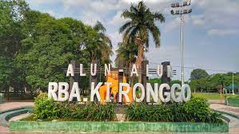

Kabupaten Bondowoso
Bondowoso (Madura: Bândâbâsa) adalah sebuah wilayah kabupaten yang berada di Provinsi Jawa Timur, Indonesia. ibu kotanya adalah Kecamatan Bondowoso. Ibu kota kabupaten nya strategis, yakni berada di persimpangan jalur dari Kecamatan Besuki dan Kabupaten Situbondo menuju Jember. Kabupaten Bondowoso merupakan satu-satunya kabupaten yang tidak memiliki wilayah pesisir laut di wilayah Tapal Kuda, Jawa Timur. Pada tahun 2020, penduduk Kabupaten Bondowoso berjumlah 776.151 jiwa dengan kepadatan penduduk 498 jiwa/km2